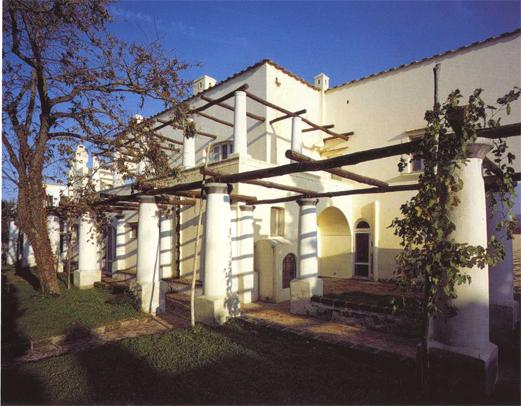
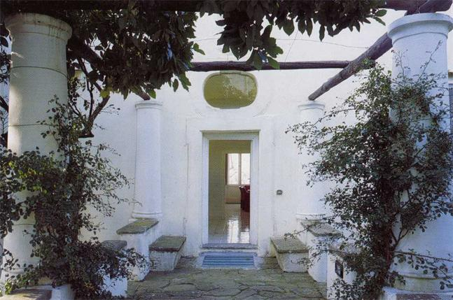
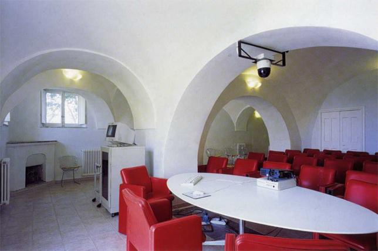
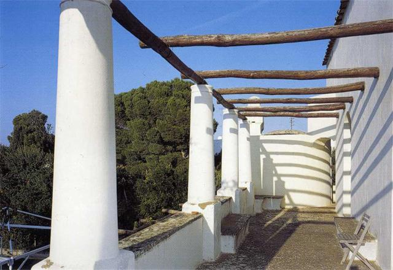
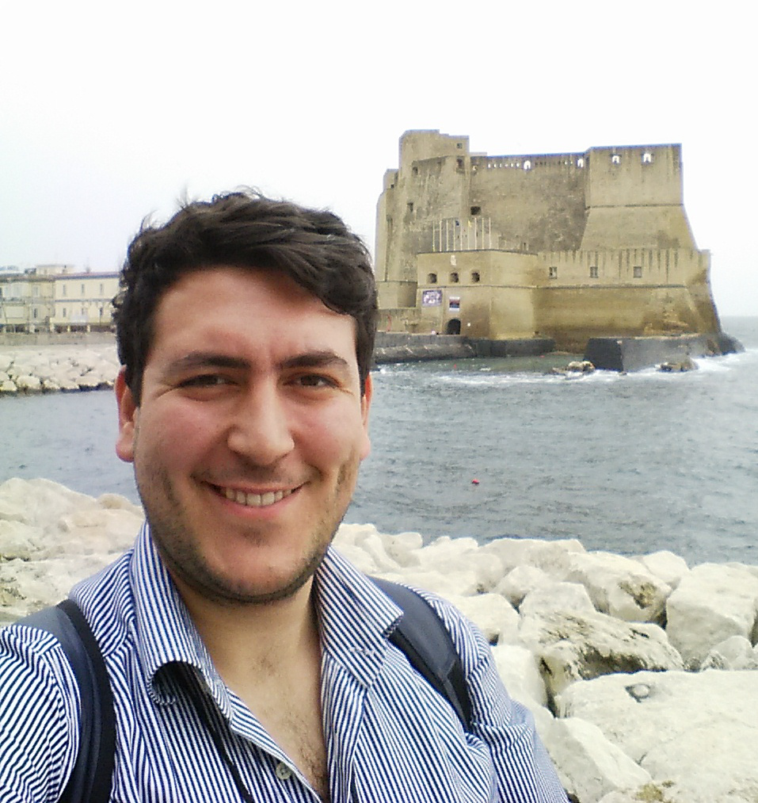
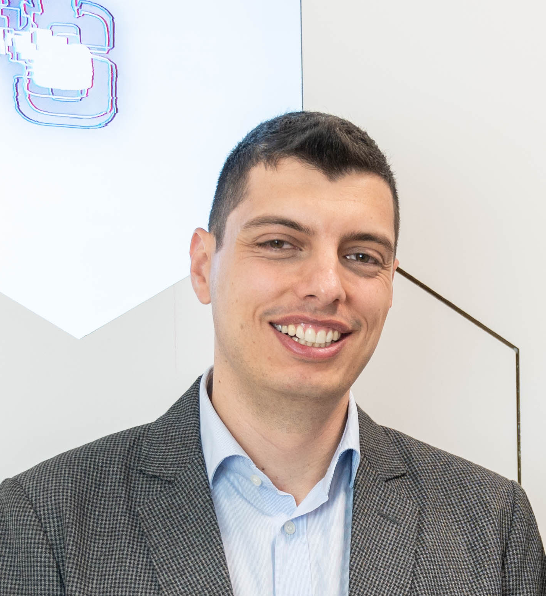

Welcome to Capri and welcome to the second edition of the PhD School on Cyber Physical Cloud (CaPriC)!
We live in an era of tremendous transformation, where digital systems are progressively embedded in physical devices adopted in our daily life, from vehicles and household appliances to heavy machinery adopted in industrial automation and satellites.
In this context, to address the stringent requirements on resource consolidation (to reduce size, weight and power) and flexible deployment, many industrial and research initiatives are blooming, exploring the adoption of cloud computing technologies in cyber physical systems. However, the adoption of such technologies in the embedded domain must consider crucial real-time requirements on safety, response latency, and predictable behavior.
The objective of CaPriC is to form new experts on cloud technologies and real-time principles in cyber physical systems, thus teaching the fundamentals and practical aspects behind the concepts of real-time virtualization, real-time networking, cloud computing, and their application to cyber-physical cloud use cases in the automotive, industrial automation, and satellite systems.
Students will have the opportunity to work in groups during both hands-on sessions and to address a cyber-physical cloud challenge in their research field of interest, that will be discussed the last day of the school.
The PhD school is aimed at PhD students, early-stage researchers, industry practitioners, and master's degree students who are finishing their theses and intend to apply for a PhD, who want to explore the blend of real-time and cloud computing and their applications on cyber physical systems.
The school program brings together industrial perspectives and academic expertise in real-time computing/networking, virtualization, and cloud infrastructures.
The curriculum blends academic depth with practical industrial insights, structured around two foundational pillars:
Designing predictable, time-sensitive systems through:
Modern distributed architectures across cloud-edge infrastructures, including:
Having many speakers from the industry, the two fundational pillars will be also enriched by:
Real-world applications and challenges in:
With a unique blend of theory and practical hands-on sessions, the school represents a unique opportunity for young PhD scholars to meet experts in the field and to acquire a useful skillset to distinguish their carrier development.
The school will take place at the historic Villa Orlandi, home to the Centro Congressi Federico II in Anacapri. Located on the beautiful Capri Island in Italy, the venue offers a unique combination of academic inspiration and natural beauty.




Applications for CaPriC 2026 will open soon. Please check this page for the application form and deadlines.
Registration details for CaPriC 2026 will be announced soon.
The registration fee will include access to the lectures, coffee breaks, lunches, and a social event. Accommodation and Travel are not included.
The detailed CaPriC 2026 schedule will be announced soon.
| Date | Time | Event |
|---|---|---|
|
19
Monday
October, 2026
|
||
| 08:30 - 09:00 | Registration | |
| 09:00 - 10:30 | Welcome | |
| 10:30 - 11:00 | Coffee break | |
| 11:00 - 12:30 | Real-Time 1: Gerhard Fohler (TU Kaiserslautern, Germany) Introduction to real-time systems |
|
| 12:30 - 14:00 | Lunch break | |
| 14:00 - 15:30 | Cloud 1: Johan Eker (Ericsson) Introduction to Cyber Physical Cloud |
|
| 15:30 - 17:00 | Group work |
|
|
20
Tuesday
October, 2026
|
||
| 08:30 - 09:00 | Registration | |
| 09:00 - 10:30 | Use-case 1: Karl-Erik Årzen (Lund University) Control over the cloud |
|
| 10:30 - 11:00 | Coffee break | |
| 11:00 - 12:30 | Real-Time 2: Sanjoy Baruah (Washington University in Saint Louis, USA) Scheduling of virtual resources |
|
| 12:30 - 14:00 | Lunch break | |
| 14:00 - 15:30 | Cloud 2: Armando Migliaccio (DigitalOcean Inc.) Anatomy of a Cloud Platform: Core Building Blocks Behind Scalable, Elastic, and Distributed Computing | |
| 17:00 - 19:30 | Social Event (Belvedere della Migliara walking🚶) | |
|
21
Wednesday
October, 2026
|
||
| 08:30 - 09:00 | Registration | |
| 09:00 - 10:30 | Cloud 3: Armando Migliaccio (Digital Ocean) From Code to Cloud: A Hands-On Journey Through the Core Building Blocks of Cloud Platforms |
|
| 10:30 - 11:00 | Coffee break | |
| 11:00 - 12:30 | Use-case 2: Kevin Schmidt (Bosch, Germany) Facing the Uncertainties of Reliable Industrial Distributed Applications |
|
| 12:30 - 14:00 | Lunch break | |
| 14:00 - 15:30 | Real-Time 3: Sanjoy Baruah (Washington University in Saint Louis, USA) Multicore and hierarchical scheduling |
|
| 15:30 - 17:00 | Group work | |
| 19:30 - 23:00 | Social Event (🍕 lovers, please not 🍍 😆). Location is Le Arcate | |
|
22
Thursday
October, 2026
|
||
| 08:30 - 09:00 | Registration | |
| 09:00 - 10:30 | Use-case 3: Karl-Erik Årzen (Lund University) and Kevin Schmidt (Bosch) Future use cases |
|
| 10:30 - 11:00 | Coffee break | |
| 11:00 - 12:30 | Real-Time 4: Marcello Cinque (Università degli Studi di Napoli Federico II) Real-time virtualization and hypervisors |
|
| 12:30 - 14:00 | Lunch break | |
| 14:00 - 15:30 | Cloud 4: Fredrik Svensson (Ericsson) Kubernetes and RT-K8S |
|
| 15:30 - 17:00 | Group work | |
|
23
Friday
October, 2026
|
||
| 08:30 - 09:00 | Registration | |
| 09:00 - 10:30 | Presentations from students | |
| 10:30 - 11:00 | Coffee break | |
| 11:00 - 12:30 | Presentations from students | |
| 12:30 - 14:00 | END |

Università degli Studi di Napoli Federico II
Local Arrangements & Web Chair

Università degli Studi di Napoli Federico II
Registration & Finance Chair
Email: capric-school@unina.it
Website: https://capric-school.github.io/